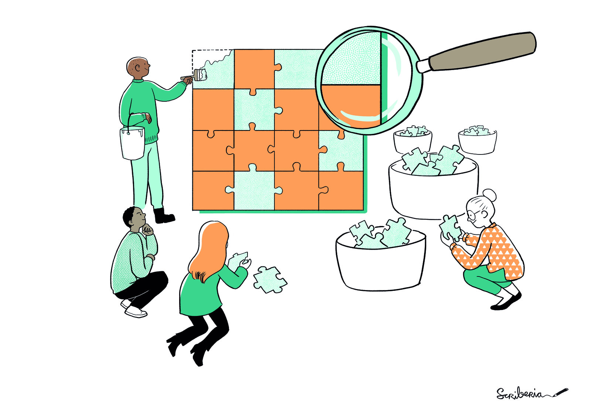
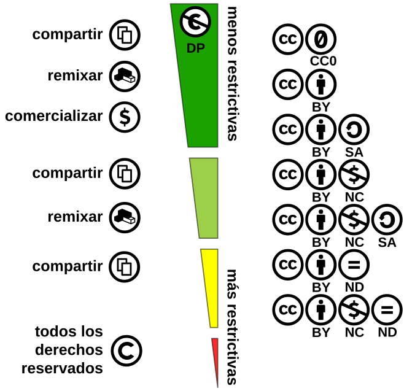
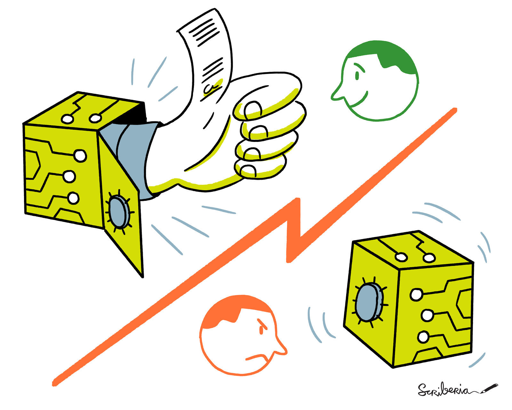
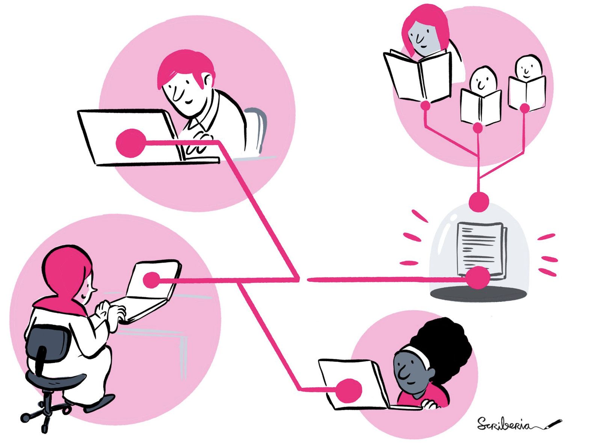
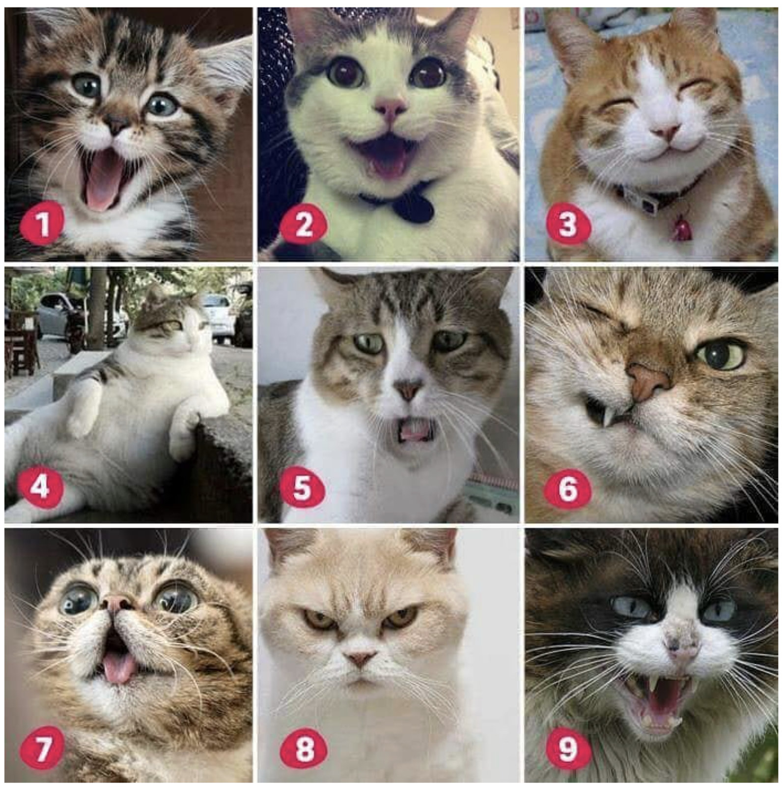
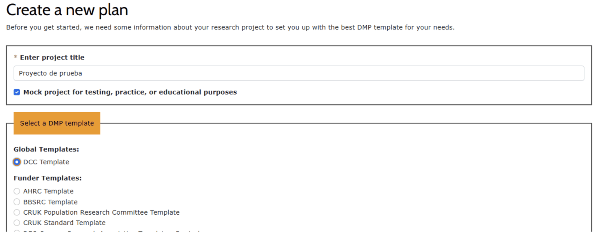
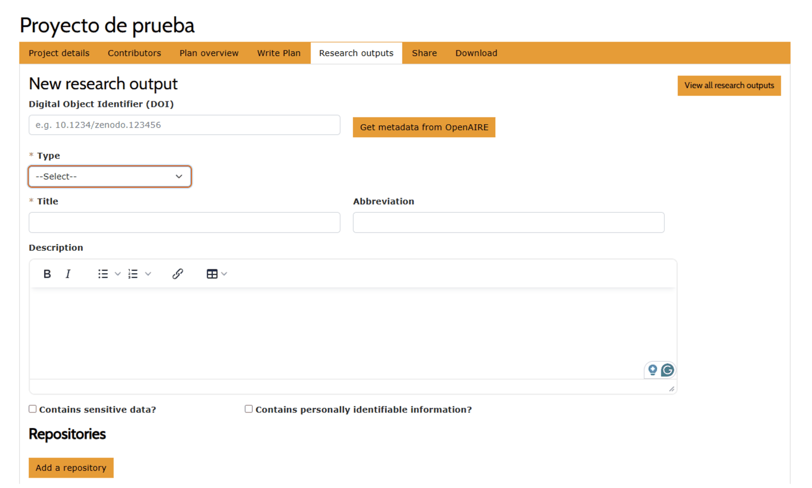
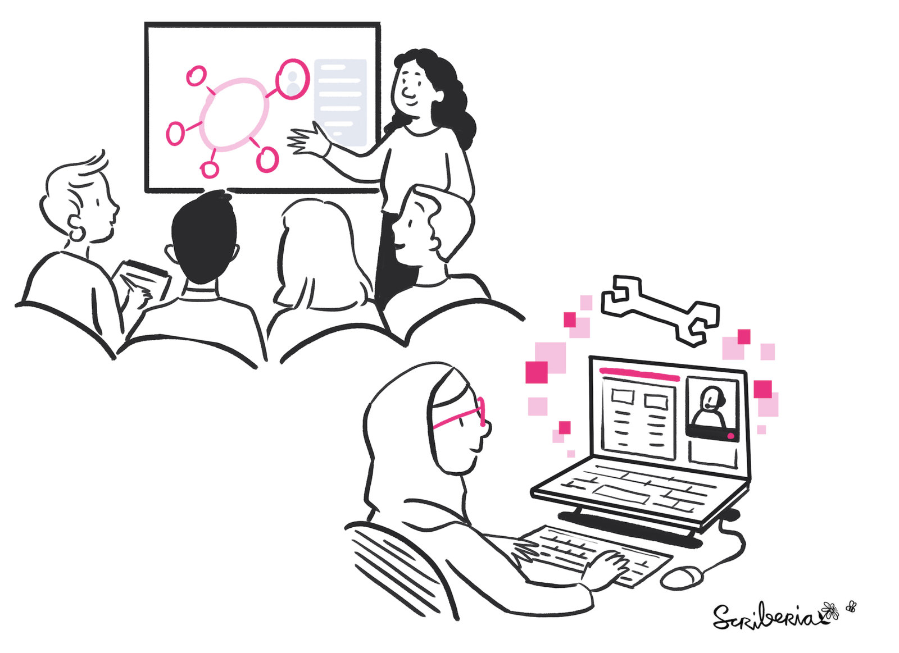
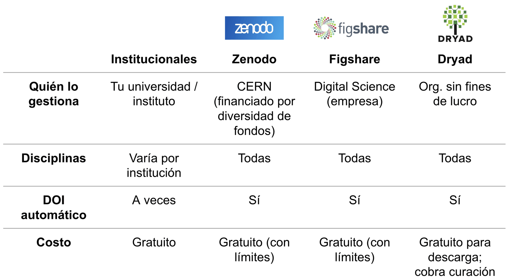
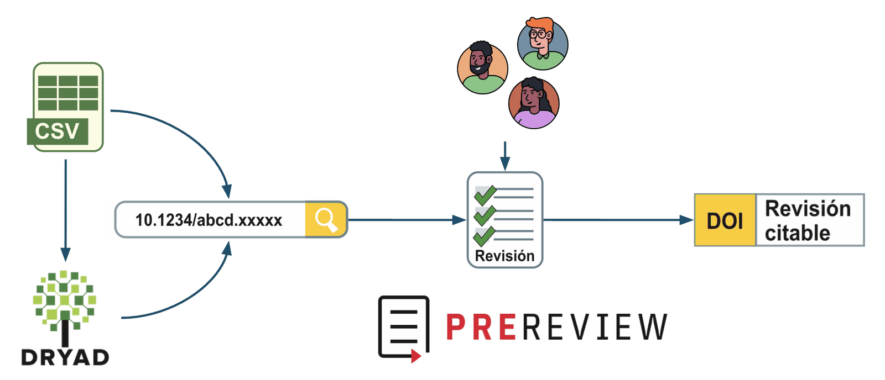

Datos Abiertos
Última actualización: 2026-08-28 | Mejora esta página
Hoja de ruta
Preguntas
Objetivos
Al finalizar este episodio, quienes participan podrán:
Herramientas de Ciencia Abierta - Encuentro 2
Antes de empezar
Pautas para un espacio amable para todas las personas:
- Para participar: pide la palabra o usa el chat.
- Micrófonos: siléncialo al terminar de hablar.
- Pide permiso antes de tomar registros de personas de este encuentro .
- Pautas de Convivencia.
Nos presentamos
- Irene Vazano: Coordinadora del área de Infraestructura.
- Nicolás Palopoli: Co-Director Ejecutivo y Consejo Asesor.
- María Paz Míguez: Coordinadora del área de Formación.
- Julián Buede: Equipo de comunicación.
Herramientas de Ciencia Abierta
| Encuentro | Tema |
|---|---|
| Encuentro 1 | Qué, por qué y cómo de la Ciencia Abierta |
| Encuentro 2 | Cómo usar, crear y compartir Datos Abiertos |
| Encuentro 3 | Cómo usar, crear y compartir Código Abierto |
| Encuentro 4 | Cómo usar, crear y compartir Resultados Abiertos |
¿Qué es un dato?
Un valor o registro que describe una observación del mundo, pero que por sí solo no tiene significado completo hasta que se lo contextualiza o analiza.
Cualquier tipo de información que se recolecta, observa o crea en el contexto de una investigación.

Fuente: The Turing Way Community, & Scriberia. (2022). Illustrations from The Turing Way: Shared under CC-BY 4.0 for reuse. Zenodo.
Tipos de datos
- Primarios (crudos).
- Secundarios (procesados).
- Publicados (finales).
- Metadatos (datos sobre datos).
Metadatos
“Datos acerca de los datos”
- Identifican autor, fecha y lugar de recolección.
- Describen cómo están organizados los datos (formato, tipos y significados de variables).
- Informan sobre preservación y uso legal (licencia de uso, condiciones de acceso).
- Son esenciales para implementar los principios FAIR.
Ejercicio 1: Responde la encuesta de Zoom
Duración: 3 minutos
¿Qué caracteriza a los metadatos?
Elige 2 opciones
- Son estructurados y estandarizados
- Son no estructurados, pueden tener cualquier formato
- Pueden ser indexados y buscados a través de motores de búsqueda
- Son formatos propietarios para los datos publicados
Licencia
Indica:
- Lo que otras personas pueden hacer con los datos (y otros materiales) que compartes.
- Las condiciones bajo las cuales se proporcionan los permisos.
- Reglas claras para la reutilización tal cual y para la creación de trabajos derivados.
Licencias Creative Commons
Las personas autoras conservan sus derechos pero conceden permisos específicos al público.
- BY - Atribución (reconocer al autor original)
- SA - Obras derivadas bajo la misma licencia
- NC - No permite uso comercial
- ND - No permite modificaciones

{kind=link}
Otras licencias
| Licencia | Uso | ¿Requiere atribución? | ¿Permite su uso comercial? | ¿Obliga a la misma licencia (copyleft)? |
|---|---|---|---|---|
| MIT | Código | Sí | Sí | No |
| Apache 2.0 | Código | Sí | Sí | No |
| GPL (GNU General Public License) | Código | Sí | Sí | Sí |
| ODbL (Open Database Licence) | Bases de datos | Sí | Sí | Sí |
¿Datos sin licencia?
- Automáticamente protegido por derechos de autor desde su creación.
- Nadie puede copiarlo, modificarlo, o reusarlo legalmente.
Ejercicio 2: Responde la encuesta de Zoom
Duración: 3 minutos
¿Cuál de las siguientes licencias Creative Commons se usa más comúnmente para compartir datos abiertos?
Selecciona la opción correcta
- CC BY-NC-SA
- CC BY
- Apache 2.0
¿Qué buscan quienes buscan datos?
Que sean:
- Fáciles de comprender
- De obtención sencilla
- De manipulación simple
- Provenientes de una fuente confiable
Fuente: How do properties of data, their curation, and their funding relate to reuse? - PMC.
Beneficios de los datos abiertos en la ciencia
- Cambios sociales para el bien común
- Apoyo a la gestión de recursos
- Respuesta a emergencias a gran escala
- Ciencia ciudadana
- Intercambio de conocimiento

Fuente: The Turing Way Community, & Scriberia. (2022). Illustrations from The Turing Way: Shared under CC-BY 4.0 for reuse. Zenodo.
Beneficios de los datos abiertos en la ciencia
- Nunca perderás el acceso a tu trabajo anterior, sin importar afiliación.
- Tus datos pueden ser citados y obtendrás crédito por ello.
- Las publicaciones que incluyen enlaces a datos se citan más (McKiernan, et al. (2016))
- Apoyo a la financiación y la comunicación de tu trabajo.

Fuente: The Turing Way Community, & Scriberia. (2022). Illustrations from The Turing Way: Shared under CC-BY 4.0 for reuse. Zenodo.
¿Hasta aquí todo bien?
¿Cómo se sienten ahora?
¿Cómo venimos?
Escribe en el chat el número de gatito que te representa ahora.

Plan de Ciencia Abierta
- Plan de gestión de datos
- Plan de gestión de software
- Plan de gestión de publicaciones
Mapa que guía la gestión abierta de información a lo largo de todas las fases de su ciclo de vida.
Aumenta la transparencia, reproducibilidad, preservación y calidad del trabajo.
Plan de gestión de datos (PGD)
Documento que describe:
- Qué datos van a recolectarse y generarse
- Cómo y dónde serán almacenados
- Cómo y cuándo serán compartidos
- Quiénes se encargaran de cada tarea
Aplicaciones para la generación de PGD
- DMPonline (DCC, Reino Unido)
- DMPTool (University of California Curation Center, EEUU)
- Argos Open Aire (Europa)
DMP online


Para ir pensando
Más tarde tendremos un ejercicio en salas de grupos para profundizar en el Plan de Gestión de Datos.
Les pediremos que compartan alguna experiencia concreta acerca de, por ejemplo:
- dificultades que encontraron
- restricciones que debieron manejar
- decisiones que no sabían cómo tomar
Les proponemos ir pensando qué comentar.
¿Qué datos?
Los formatos y estándares elegidos deben asegurar compatibilidad y facilidad de uso

Fuente: The Turing Way Community, & Scriberia. (2022). Illustrations from The Turing Way: Shared under CC-BY 4.0 for reuse. Zenodo.
¿Cuándo abrir los datos?
- Al momento de la recolección → Maximiza la reutilización
- Al tiempo de la publicación → Permite reproducir los resultados
- Al final del trabajo
- Nunca compartir (datos restringidos)
El objetivo es compartir tan temprano como sea posible los datos que sea seguro compartir
Posibles restricciones
- Información médica privada o datos de identificación de una persona
- Asuntos indígenas/culturales/de conservación
- Propiedad intelectual o carencia de una licencia
- Secretos militares de un país o violaciones de los intereses nacionales
¿Dónde depositar los datos?
Un buen repositorio debe:
- Asignar un identificador persistente (como un DOI)
- Ser accesible a largo plazo
- Estar alineado con tu disciplina o ser reconocido por tu comunidad
- Cumplir los estándares de datos abiertos
- A veces, ser el que define el financiador del proyecto
Repositorios
| Institucionales | Zenodo | Figshare | Dryad | |
|---|---|---|---|---|
| Quién lo gestiona | Tu universidad / instituto | CERN (financiado por diversidad de fondos) | Digital Science (empresa) | Org. sin fines de lucro |
| Disciplinas | Varía por institución | Todas | Todas | Todas |
| DOI automático | A veces | Sí | Sí | Sí |
| Costo | Gratuito | Gratuito (con límites) | Gratuito (con límites) | Gratuito para descarga; cobra curación |

Revisión por pares

Fuente: “Avatar Filled Line Set” de andinurstd (Envato Elements). Usado bajo licencia de Envato Elements. https://elements.envato.com/avatar-filled-line-set-PWY2XE4.
¿Cómo compartir los datos?
- Asignar una licencia
- Facilitar la información necesaria para citarlos correctamente
- Incluye metadatos y documentación complementaria (README)
Información sobre cómo citar
- Los autores y sus instituciones
- Título
- ORCiD
- DOI
- Versión
- URL
- Fecha de creación
¿Quién? Roles y responsabilidades
- ¿Quién moverá los datos al repositorio?
- ¿Quién desarrollará la documentación de datos y los metadatos?
- ¿Quién ayudará con la reutilización de datos?
- ¿Quién desarrollará una guía sobre privacidad y sensibilidad cultural de los datos?
¡Incluye toda esta información en el Plan de Gestión de Datos!
Intercambio en salas de grupo
¿Cómo vamos a trabajar?
- Cada grupo elige una persona para moderar la conversación, optimizar tiempos y socializar la palabra
- Cada grupo elige una persona representante para sintetizar y compartir el intercambio en la sala principal
Ejercicio 3: Sala de grupos
Duración: 10 minutos
Compartan en el grupo: ¿tuvieron alguna experiencia concreta con alguna de las preguntas del PGD?
- ¿Qué datos generan o usan en su trabajo?
- ¿Encontraron alguna dificultad? Por ejemplo: no poder compartir datos por una restricción, tener que esperar a la publicación, no saber en qué formato guardarlos, no encontrar un repositorio adecuado…
Si no trabajás directamente con datos, pensá en tu rol de apoyo: ¿alguna vez alguien te consultó sobre estas cuestiones? ¿Qué dificultades observaste en quienes sí los gestionan?
Compartir Datos Abiertos
Bueno
- Elige una licencia. Ej: https://creativecommons.org.ar/licencias/
- Sube tus archivos a un repositorio. Ej: Zenodo https://zenodo.org/
Recapitulando
- Plan de gestión de datos como un documento que evoluciona a lo largo de un proyecto cuyo objetivo es facilitar y acompañar la gestión de datos.
- La importancia de compartir archivos en formatos abiertos.
- ¿Dónde descubrir datos? Portales, repositorios, publicaciones y organizaciones.
- No todos los datos deber ser abiertos. Los datos deben ser tan abiertos como sea posible y tan cerrados como sea necesario.
Lecturas útiles
🚨 ¡Aviso! Te invitamos a que si encuentras errores o tienes sugerencias, los publiques como un “issue” en GitHub. ¡Dar devolución abierta es una excelente manera de contribuir a un proyecto!
Crítica constructiva
- Positiva
- Específica
- Sugiere próximos pasos
Completa nuestra encuesta anónima
Herramientas de Ciencia Abierta
- Encuentro 1 — Qué, por qué y cómo de la Ciencia Abierta
- Encuentro 2 — Cómo usar, crear y compartir Datos Abiertos
- Encuentro 3 — Cómo usar, crear y compartir Código Abierto
- Encuentro 4 — Cómo usar, crear y compartir Resultados Abiertos
Certificación NASA: Evaluación del módulo
Duración: 15 minutos
¿Dudas? Puedes consultar levantando la mano o por el chat.
¿Terminaste? Puedes salir de la reunión, ¡hasta la próxima!
¡Muchas gracias!
Este encuentro fue posible gracias a:
- NASA Open Science
- CS&S (Code for Science & Society)
Referencia sugerida:
https://doi.org/10.5281/zenodo.18891558
@metadocencia